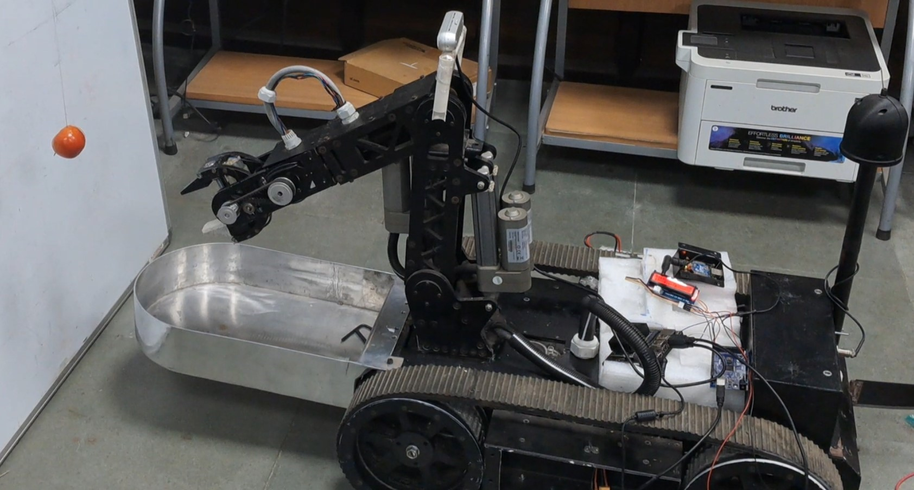
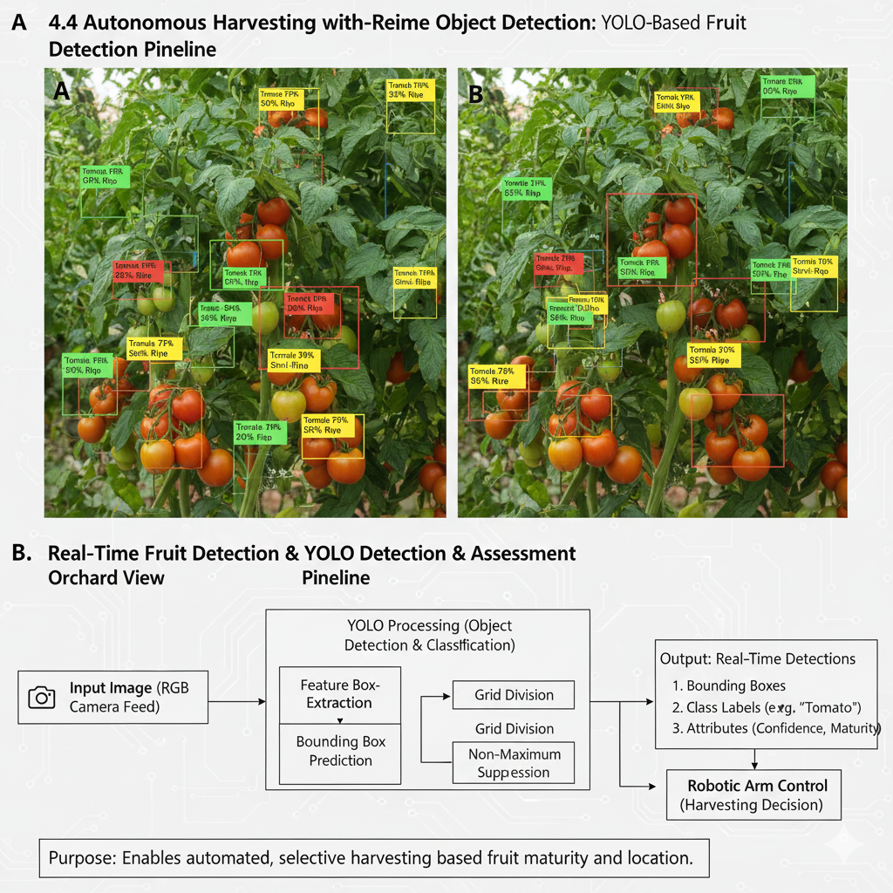
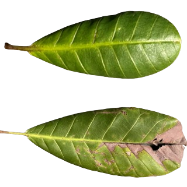

PhD Candidate, IIT Kharagpur | AI-driven autonomous agricultural robots, vision transformers, and real-world field deployment.
Email: pradeepnahak2008@gmail.com | GitHub: github.com/pradeep9927 | LinkedIn: linkedin.com/in/pradeep-nahak-71126172
I am a PhD Candidate in Mechanical Engineering at IIT Kharagpur specializing in AI-driven agricultural robotics. My work focuses on designing and deploying tracked mobile manipulators integrated with RGB-D perception, deep learning, and embedded AI for precision agriculture.
I develop and deploy CNN- and Vision Transformer-based perception pipelines for fruit detection, ripeness estimation, plant disease classification, soil moisture assessment, and autonomous navigation in unstructured agricultural environments.

AI-integrated tracked mobile manipulator for autonomous navigation and robotic fruit picking in rough terrain.

Vision Transformer and CNN-based tomato maturity stage classification for precision harvesting.

Hybrid CNN–ViT framework for robust plant disease detection under limited data conditions.
Open to remote AI/ML, computer vision, and robotics projects with a focus on real-world deployment and high-impact outcomes.